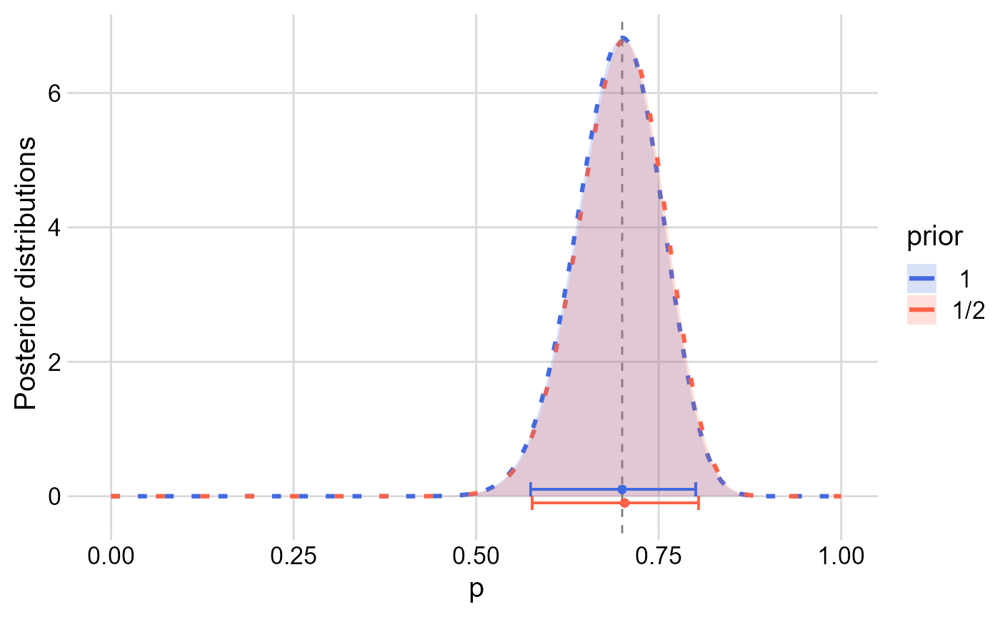
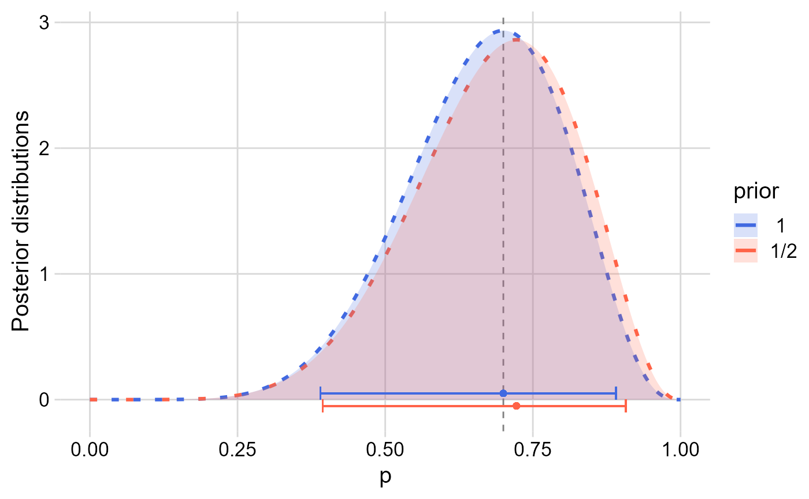

SimuNet’s Bayesian frameworkvignettes/articles/bayesian_framework.Rmd
bayesian_framework.RmdSimuNet’s Bayesian approachIn this article, we discuss what are the underlying ideas that led us to adopt the Bayesian approach at the core of SimuNet’s simulations.
SimuNet simulates weighted networks by adopting a “binomial” approach to edge weights:
It is common with weighted (animal) social networks to quantify edge weights by accumulating social data that are inherently binary:
#TODO: schematic binary nature of edges in scan and continuous samplingUnder this assumption that an edge is either 0 or 1 at each scan/unit of time and that the edge weight is then the sum of 1s, we propose that edge weights can be viewed as “binomial”:
#TODO: schematic analogy coin-tosses and edge weightsThis however raises questions regarding what differs with a purely binomial process, or requires additional assumptions to be met:
Static networks imply several assumption that allows for an easy “Binomial” approach to edge weights:
#TODO: schematic static networkConsidering dynamic networks, such a Binomial approach could still hold under the assumption that \(p\) would be variable through time:
SimuNet only relies on a constant \(p\) throughout all scans, which implies that it considers networks mostly static. SimuNet is however designed to accommodate time-dependent \(p\), to therefore simulate dynamic networksPoint 6. is the main consideration that led SimuNet to generate weighted networks under a Bayesian framework.
Estimating \(p\) for a binomial variable \(X \sim Binomial(n,p)\) from observations, e.g. the number of heads after \(n\) coin-tosses that had probability \(p\) of being head, is a common mathematical problem. See this Wikipedia article on the subject.
#TODO: schematic from obs to a distribution of pIt is however illusory to believe that we can find a single value that reflects both our best estimation of \(p\) (a positional aspect of \(p\)) and our confidence/certainty in this estimation. Intuitively, we also need a notion of spread around our estimation, either in the form of a confidence/credible interval, or even better, a distribution of \(p\) on \([0,1]\).
Such a distribution of \(p\) should:
Combining of the two previous points, when \(X\) was exactly \(0\) or \(n\), illustrates these issues of confidence/uncertainty: e.g. how confident should one be when estimating \(p=\frac{0}{n}=0\) or \(p=\frac{n}{n}=1\) when \(n=5\) versus when \(n=5000\)?
Hereafter, we demonstrate step-by-step how Bayesian statistics help finding such a distribution of \(p\).
The problem of estimating the unknown binomial probability \(p\) from the observation of an outcome and prior knowledge (or lack thereof) is well formalized under a Bayesian inference (see this Wikipedia page and this related one on this topic). In short:
We want to obtain a posterior distribution of \(p\) after observing \(X = a\), noted \(P(p|X=a)\), using Bayes’ theorem: \[P(p|X=a) = \frac{P(X=a|p)P(p)}{P(X=a)},\] with:
Note: across the Bayes’ theorem, \(P(p)\) is a shortcut for \(P(p = \pi),\forall\pi\in[0,1]\) (or rather \(P(\pi_1\leq p \leq\pi_2]),(\pi_1,\pi_2)\in[0,1]^2\) due to the continuous nature of \(p\)). But since we are interested in a posterior distribution of \(p\) over the whole \([0,1]\) interval, it is common to omit such notation.
The Beta distribution, can be used to model the prior and posterior distributions of the potential values \(p\) can take:
#TODO: schematic Beta distribution for different values of alpha and betaThe Beta distribution is the conjugate of the Binomial distribution in Bayesian statistics, which means that when using a Beta distribution as a prior with a Binomial likelihood, the resulting posterior probability distribution is also Beta distributed, which allows for an “iterative” update of our knowledge of the distribution of \(p\).
Therefore, prior knowledge, like having observed a previous outcome before trying to estimate \(p\) from observations, can be used as a prior to further inform the posterior distribution of \(p\):
#TODO: schematic Bayesian inference combining prior + observation to form the posteriorBut what about when we don’t have prior knowledge on \(p\)?
#TODO: schematic Uninformative Beta priorsWe now obtained a posterior distribution of \(p\) that best reflects our current knowledge of \(p\) by combining our prior knowledge and updated it in view of observing \(X=a\).
Imagine that two individuals have been observed associating 42 times after observing them 60 times:
In R, xbeta() functions like dbeta(), qbeta() or rbeta() from stats implements density, quantile and random number generation function related to the Beta distribution. Here is how the distribution looks like:
library(ggplot2)
library(cowplot)
rbind(
data.frame(p = seq(0,1,0.001),post = seq(0,1,0.001) |> dbeta(42.5,18.5),prior = "1/2"),
data.frame(p = seq(0,1,0.001),post = seq(0,1,0.001) |> dbeta(43,19),prior = " 1 ")
) |>
ggplot(aes(p,post,colour = prior))+
geom_line(aes(lty = prior),size = 1.1)+
geom_vline(xintercept = 7/10,lty = "dashed",colour = "grey50")+
geom_ribbon(aes(ymin = 0,ymax = post,fill = prior),alpha = 0.2,colour = NA)+
geom_point(aes(x = 41.5 / 59,y = -0.1),colour = "tomato")+
geom_errorbarh(aes(y = -0.1,xmin = qbeta(0.025,42.5,18.5),xmax = qbeta(0.975,42.5,18.5)),
colour = "tomato",height = 0.2)+
geom_point(aes(x = 42 / 60,y = 0.1),colour = "royalblue")+
geom_errorbarh(aes(y = 0.1,xmin = qbeta(0.025,43,19),xmax = qbeta(0.975,43,19)),
colour = "royalblue",height = 0.2)+
scale_colour_manual(values = c("royalblue","tomato"))+
scale_fill_manual(values = c("royalblue","tomato"))+
scale_linetype_manual(values = c("2424","2828"))+
guides(linetype = "none")+
labs(y = "Posterior distributions")+
theme_minimal_grid(15)+
theme(plot.background = element_rect(fill = 'white', colour = NA))
where the dots + intervals are the modes and \([2.5\%,97.5\%]\) inter-quantile intervals of the two posterior distributions, and the dashed vertical grey line represents \(\frac{42}{60}\).
It is visible that the choice between either of the two uninformative priors has already little impact on the resulting posterior for \(n = 60\).
Let’s see how the distribution changes for a similar estimation of \(p\) but with lower sample size \(n\), with \(X=7\) and \(n=10\) (\(\frac{42}{60}=\frac{7}{10}=0.7\)):
rbind(
data.frame(p = seq(0,1,0.001),post = seq(0,1,0.001) |> dbeta(7.5,3.5),prior = "1/2"),
data.frame(p = seq(0,1,0.001),post = seq(0,1,0.001) |> dbeta(8,4),prior = " 1 ")
) |>
ggplot(aes(p,post,colour = prior))+
geom_line(aes(lty = prior),size = 1.1)+
geom_vline(xintercept = 7/10,lty = "dashed",colour = "grey50")+
geom_ribbon(aes(ymin = 0,ymax = post,fill = prior),alpha = 0.2,colour = NA)+
geom_point(aes(x = 6.5 / 9,y = -0.05),colour = "tomato")+
geom_errorbarh(aes(y = -0.05,xmin = qbeta(0.025,7.5,3.5),xmax = qbeta(0.975,7.5,3.5)),
colour = "tomato",height = 0.1)+
geom_point(aes(x = 7 / 10,y = 0.05),colour = "royalblue")+
geom_errorbarh(aes(y = 0.05,xmin = qbeta(0.025,8,4),xmax = qbeta(0.975,8,4)),
colour = "royalblue",height = 0.1)+
scale_colour_manual(values = c("royalblue","tomato"))+
scale_fill_manual(values = c("royalblue","tomato"))+
scale_linetype_manual(values = c("2424","2828"))+
guides(linetype = "none")+
labs(y = "Posterior distributions")+
theme_minimal_grid(15)+
theme(plot.background = element_rect(fill = 'white', colour = NA))
The posterior distributions are wider, and at such low sampling effort, a larger difference is observed between using one uninformative prior or the other.
But how to use this inferred distribution of \(p\)? What value of \(p\) to use when randomly simulating if an edge should be \(0\) or \(1\), while still reflecting the gained knowledge on the confidence/uncertainty of \(p\)?
As seen in the previous examples, with a uniform prior \(Beta(1,1)\), the mode of the posterior distribution is for \(p=\frac{a}{n}\), and that using Jeffrey’s prior leads to posterior converging to similar posterior distributions when \(n\) increases. Simply using the mode does not reflect the confidence/uncertainty, or in other words, how wide/narrow around \(\frac{a}{n}\) is the posterior distribution of \(p\) for different values of \(n\), e.g. if comparing \(\frac{7}{10}=0.7\) and \(\frac{42}{60}=0.7\).
We can intuitively see that a “point” estimate of \(p\) might not represent \(p\) variability as well as relying on values of \(p\) that make use of the whole posterior distribution.
To overcome this issue, we propose here to:
In other words, we can say that:
This process is by definition a Beta-Binomial process, with \[X_{simu} \sim Beta\!-\!Binomial(a+\alpha_{prior},n-a+\beta_{prior},n_{simu})\]
Note that for a given simulation of \(n_{simu}\) scans, we draw a single random \(p\) because, compared to only drawing a single value of \(p\) before each scan, this adds additional variance to \(X_{simu}\), which comes from the combination of the uncertainty over \(p\), and the added variability from sampling new data. See this post on StackOverflow for more details on the difference between these two processes.
SimuNet aims at simulating a sequence of binary scans, for which each edge is either 0 or 1. This is because we believe that phenomenon or manipulations can happen at any of these binary scans, with potential impact on network metrics of interest after aggregating these binary scans into edge weights.
For instance, missing an edge during sampling - e.g. two individuals are not visible, and it is not possible to assess if the individuals are associating/interacting or not, i.e. that the edge between them is 0 or 1 - happens or not during a single scan.
Simulating sequences of binary scans allows designing and performing network manipulations more flexibly at a “granular” level, in comparison of obtaining directly an integer for the edge weight.
SimuNet keeps track as much as possible of the “intermediate” steps leading to a weighted network, especially through the use of an attribute list attrs. This way, we hope that SimuNet can be used and adapted to generate varied network simulations.
#TODO: schematic comparison drawing edges from Beta-Binomial vs SimuNet's step-by-step approach